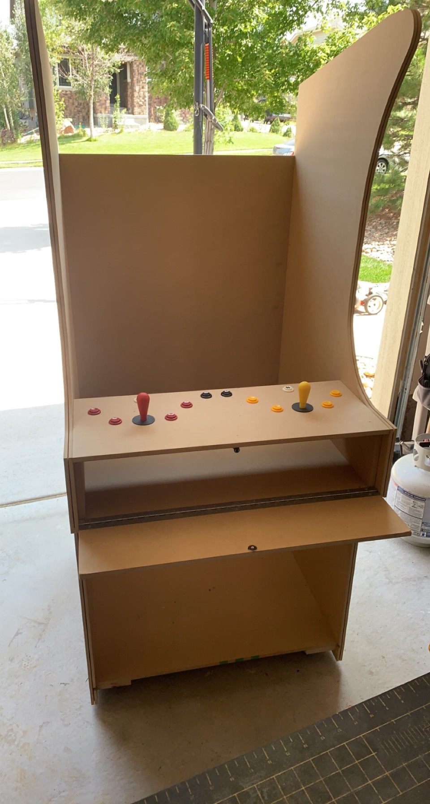
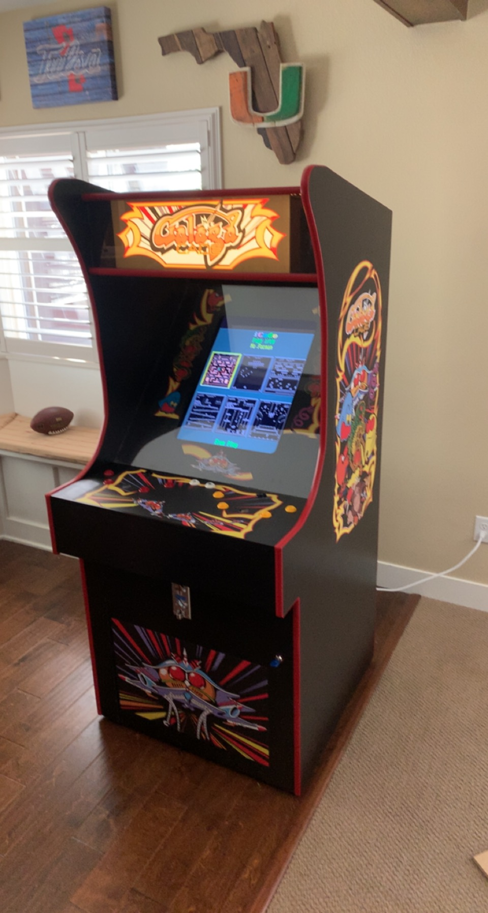

My first personal project was the full construction and
assembly of a custom arcade console. I have always been a
fan of retro video games, so I had the idea of building my
own console with all of the games in one system. A majority
of this project involved the construction of the frame itself.
I designed a custom frame with controls at a custom height
and width that is ideal for both single and multiplayer
experience. The controls were customized to accommodate
all of the classic games. The assembly of the hardware
included the mounting and wiring of complex circuity as
well as some simple coding to change video parameters to
fit my screen. This project helped me understand the
importance of planning and precision in major projects.
In my time within Texas A&M Engineering, I have developed a
broad expertise in both the software and hardware side of
computers. Within my coding classes that I have taken, I
have completed projects involving RSA encryption, data
structures and algorithms, VM instances, server connections,
thread syncronization, and other projects. Within the
hardware classes that I have taken, I have completed projects
involving datapath components, digital system design, and
binary and assembly code translation and application.